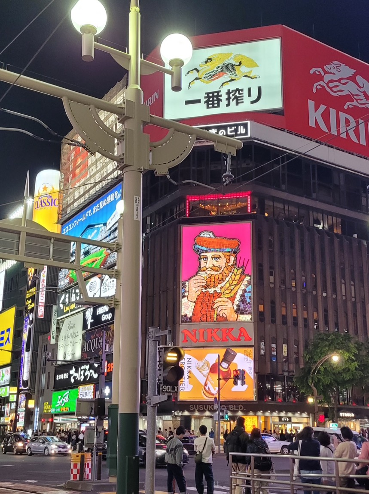
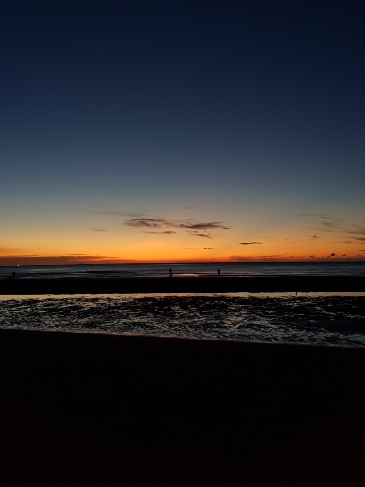
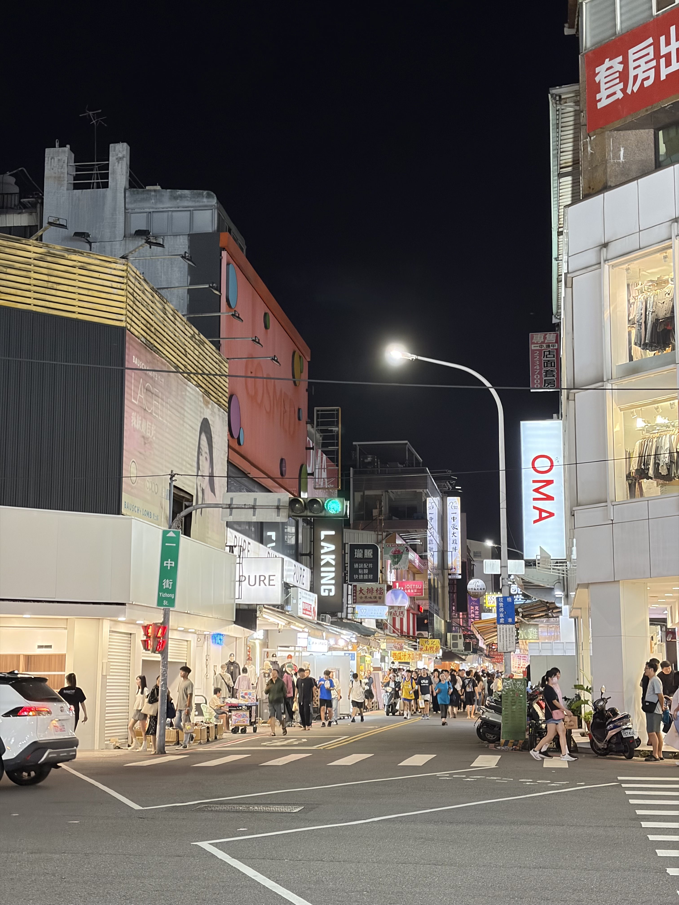

關於我
在這個部落格中，將分享我的日常生活點滴、興趣愛好，記錄每個值得紀念的時刻與成長過程。
王緁瑩國立台北教育大學資科系學生 |
我是一位資訊科學系的學生，平時喜歡接觸不同的資訊科技，也會學習程式設計相關的知識，希望能在大學生活中累積更多經驗，學習自己有興趣的事物，並完成一些想做的目標。
生活中，我喜歡聽音樂、旅遊、欣賞風景，也喜歡看電影和追劇。希望透過這個部落格記錄自己的日常生活、興趣愛好，以及生活中遇到的大小事，分享每一段值得紀錄的回憶。
在這個部落格中，將分享我的日常生活點滴、興趣愛好，記錄每個值得紀念的時刻與成長過程。
王緁瑩國立台北教育大學資科系學生 |
我是一位資訊科學系的學生，平時喜歡接觸不同的資訊科技，也會學習程式設計相關的知識，希望能在大學生活中累積更多經驗，學習自己有興趣的事物，並完成一些想做的目標。
生活中，我喜歡聽音樂、旅遊、欣賞風景，也喜歡看電影和追劇。希望透過這個部落格記錄自己的日常生活、興趣愛好，以及生活中遇到的大小事，分享每一段值得紀錄的回憶。
| 最喜歡的音樂： | A COLD PLAY by The Kid LAROI |
|---|---|
| 最喜歡的電影： | 《鐵達尼號》 by 詹姆士·卡麥隆 |
| 最喜歡的地點： | 淡水沙崙海灘 |
The Kid LAROI-A COLD PLAY
Daniel Caesar-Disillusioned
SETI-Forget it ft.Mac Ova Seas



這次透過html製作自己的個人部落格，讓我對網頁設計有了更多的認識及興趣。從一開始的架構設定，到後來加入文字、圖片及調整版面配置，過程中也遇到一些需要修改和調整的地方。透過這次實作，我學會了如何運用html建立基本的網頁內容，也更了解網頁是如何呈現出來的。
這次我選擇以自己的日常生活和興趣作為部落格主題，將平常喜歡的音樂、旅遊、風景、電影和追劇等內容融入其中。雖然還有很多可以進步的地方，但完成後很有成就感，也希望未來能學習更多網頁設計的技巧，讓自己的網頁變得更加豐富。